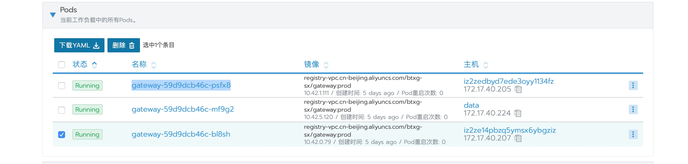
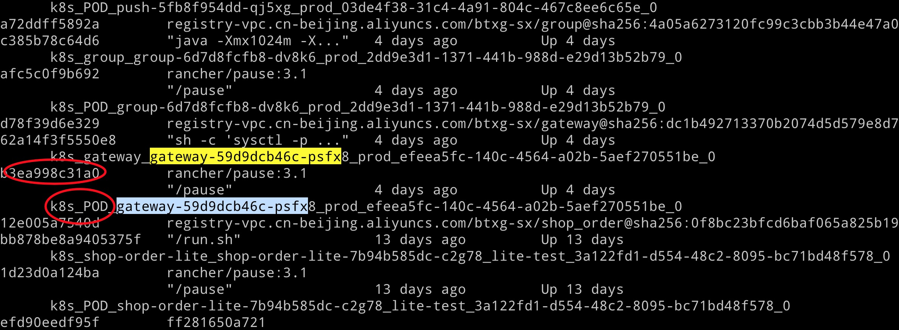
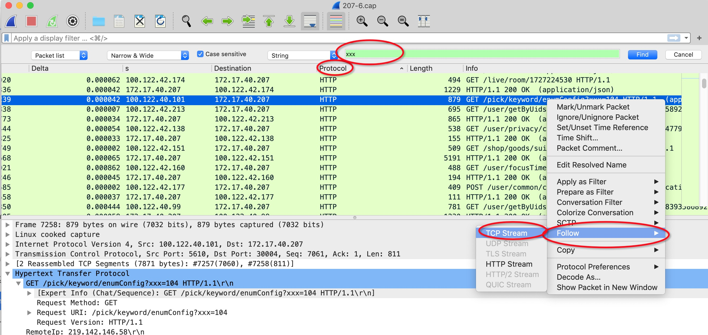
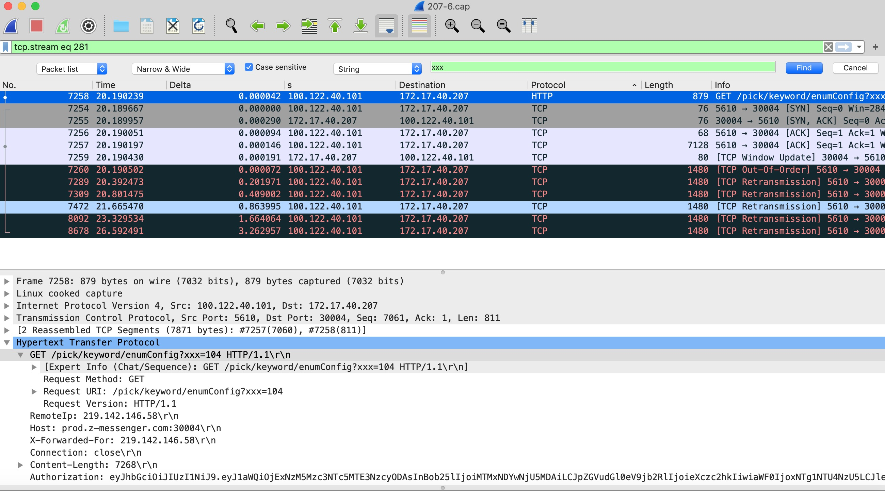

tcpdump
抓端口为30004，所有网卡
tcpdump -i any port 30004 -w ./xx.cap
30004 为tcp 监听端口，xx.cap 是指把数据写到这个文件中，待我们用wireshark分析
容器内抓包
有些容器可能没有安装tcpdump，又不太方便安装。可以切换网络空间，然后在宿主机上抓。
参考：https://tencentcloudcontainerteam.github.io/2019/05/19/capture-packets-in-container/
我们实际抓包过程如下：
1.在rancher ui 下找到你要抓的容器name

比如我们抓第一个实例，name为gateway-59d9dcb46c-psfx
2.在相应宿主机172.17.40.205这台机子上去docker ps -a列出所有实例

找到前缀带POD的实例ID:b3ea998c31a0
3.最后按参考链接步骤
获得容器进程的 pid
docker inspect -f {{.State.Pid}} b3ea998c31a0
进入该容器的 network namespace
nsenter -n --target 25134
注意： 不用担心抓包完后如何切换网络空间回去，再次登陆shell时，空间会恢复为宿主默认的空间。
wireshark分析
根据http请求url，查找包
比如我们用postman发送了一个get请求url如下：
http://127.0.0.1:30004/pick/keywords/enumConfig?xxx=104
我们可以在query参数带一些特殊标识，以便我们追中，比如我们带了xxx=104.
两步锁定包

我们先点击Protocol排序，将http协议排前面。(如果没有这步，你搜到了结果，可能在后面很远，不会有好展示），mac 为例command+F 直接搜索关键字
xxx。这里，你不但可以搜你自己标记的关键字。你还可以搜任何值。比如下图中，info 列里的端口5610你也可以搜。（为啥要强调这个呢？比如在docker 环境中，容器内的监听端口是30004，对外映射暴露的宿主端口是8081。此时你需要tcpdump 两个地方。8081收到了http包，恰好你30004没有收到http协议这个包，你将无法通过搜索xxx将两边连起来。唯一关联的可能是端口）右键follow  将会展示我们这次请求相关联的所有包
一个重要的小技巧
看到我们有一列叫Delta，默认是没有的，需要你设置下（我们不展开）。这列含义指的是前后两个包到达或者发送的间隔时间，单位是秒。这对于分析包时间很有帮助。
其它参考
https://www.youtube.com/watch?v=15wDU3Wx1h0
https://www.youtube.com/watch?v=visrNiKIP3E
https://www.youtube.com/watch?v=8XJPZttC4RM